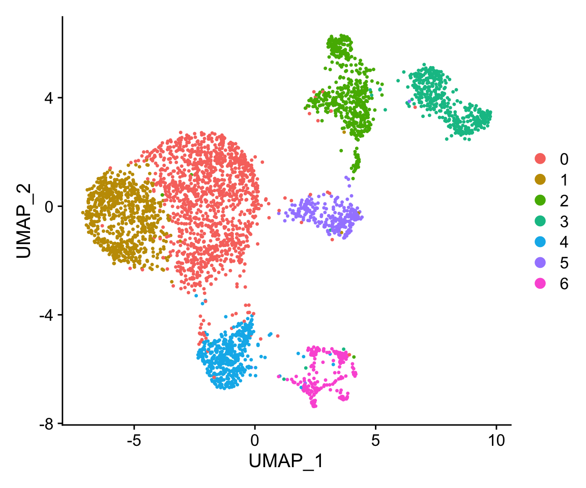

suppressPackageStartupMessages({
library(anndataR)
library(fs)
library(rhdf5)
library(Seurat)
})tl;dr
Both the R and python communities have created amazing software tools to analyze single-cell data. It used to be tricky to convert between the most prominent serialized data structures: SingleCellExperiment and Seurat R objects and AnnData python objects. Luckily, Bioconductor release 3.22 introduced the anndataR R package, authored by Robrecht Cannoodt, Luke Zappia, Martin Morgan and Louise Deconinck, which offers a reliable solution 1.
Lin et al’s single-cell RNA-seq datasets
In 2021, Lin et al published three separate single-cell RNA-seq datasets that characterize the transcriptomes of neurons differentiated from induced pluripotent stem cells (iPSC) through overexpression of the NGN2 transcription factor. The authors made the data available as serialized Seurat objects (version 3.1), available for download from Mendeley Data.
Let’s start with a function that allows us to download a deposited file and store it in a temporary location on the local system.
Download function
#' Download a serialized Seurat object published by Lin et al from Mendeley data
#'
#' @param experiment Scalar character, the experiment to download
#' @return Scalar character, the path to the downloaded file
#' @details The Seurat files were referenced in the
#' [preprint](https://www.biorxiv.org/content/10.1101/2020.11.19.389445v1.full)
#' and it is possible that the final results published in Stem Cell Reports
#' are (slightly) different. Available serialized Seurat objects:
#' - `d14`:
#' - ScRNA-seq data of Ngn2-iNeuron at d14, varied Dox duration during culture
#' - RDS file size: 284.3 MB
#' - 51723 features across 2767 cells:
# - iN_Dox_ctrl: 1351 cells
# - iN_Dox_d1: 311 cells
# - iN_Dox_d3: 378 cells:
# - iN_Dox_d5: 727 cells
#' - `w5`:
#' - ScRNA-seq data of w5 Ngn2-iNeuron from different cell types and clones
#' - RDS file size: 114 MB
#' - 17546 features across 3866 cells:
# - line 09b2: 993 cells
# - line 409b2_clone: 1654 cells
# - line sc102a1: 1219 cells
#' - `timecourse`:
#' - Time-course scRNA-seq data of Ngn2-induced neuron differentiation
#' - RDS file size: 1454.1 MB
#' - 17546 features across 29554 cells:
# - h0: 1636 cells
# - h6/12: 6874 cells
# - d1: 3148 cells
# - d2: 6350 cells
# - d5: 1907 cells
# - w2: 1508 cells
# - w4: 7141 cells
# - w5: 990 cells
download_seurat_object <- function(experiment = c("d14", "w5", "timecourse")) {
experiment <- match.arg(experiment)
root <- "https://data.mendeley.com/public-files/datasets/y3s4hnyvg6/files/"
url <- switch(
experiment,
"d14" = paste0(
root,
"b33734ff-8f10-4bf1-8bde-d7af79f4177f/file_downloaded"
),
"w5" = paste0(
root,
"c3b21223-bd13-4bd4-82e3-1cb143136244/file_downloaded"
),
"timecourse" = paste0(
root,
"27ec7771-eda0-44d4-9ae5-0859e26fabb5/file_downloaded"
)
)
temp_file <- tempfile(fileext = ".rds")
download.file(url, destfile = temp_file)
return(temp_file)
}For example, we can retrieve the w5 dataset, containing data from Ngn2-iNeurons derived from different cell types and clones, and then load it into our R session. Because the definition of Seurat objects has been updated since the authored deposited the files, we update it on the fly with Seurat::UpdateSeuratObject.
The following call will download 114.3 MB of data.
seurat_obj <- download_seurat_object('w5') |>
readRDS() |>
Seurat::UpdateSeuratObject()Next, let’s take a look at the Seurat object itself. It contains data from two assays: “RNA” and “integrated”. Because we can only store results from a single assay in an annData object, we will focus on the RNA assay here.
names(seurat_obj@assays)[1] "RNA" "integrated"The Seurat object includes multiple metadata columns that provide information about each cell in the dataset.
colnames(seurat_obj@meta.data) [1] "nGene" "nUMI"
[3] "sample" "batch"
[5] "timepoint" "line"
[7] "percent.mito" "percent.ribo"
[9] "integrated_snn_res.0.3_merged" "alt_cell_name"
[11] "nVector" "expr_exoNgn2" In addition, the cell identity vector assigns each cell to one of 7 clusters. Let’s add this information to the metadata slot 2.
The object also contains the reduced dimensions the authors calculated in the pca and umap. Let’s plot the cells along their UMAP coordinates and color them by their assigned clusters:
seurat_obj$seurat_clusters <- Seurat::Idents(seurat_obj)
Seurat::DimPlot(seurat_obj)
Converating from Seurat to an AnnData object
Converting the Seurat object to an InMemoryAnnData R object is as simple as calling anndataR::as_AnnData. By default, the function will try to guess which slots of the Seurat object should be mapped to the corresponding slots of the annData object. Here, we specify the layers, reduced dimensions (pca and umap) and nearest neighbor graphs explicitely, to make sure they are correctly included in the converted object.
adata <- anndataR::as_AnnData(
x = seurat_obj,
assay_name = "RNA",
layers_mapping = c(
counts = "counts",
data = "data"
),
x_mapping = "counts",
obsp_mapping = c(
integrated_nn = "integrated_nn",
integrated_snn = "integrated_snn"
),
obsm_mapping = c(X_pca = "pca", X_umap = "umap"),
output_class = "InMemory"
)
adataInMemoryAnnData object with n_obs × n_vars = 3866 × 17546
obs: 'nGene', 'nUMI', 'sample', 'batch', 'timepoint', 'line', 'percent.mito', 'percent.ribo', 'integrated_snn_res.0.3_merged', 'alt_cell_name', 'nVector', 'expr_exoNgn2', 'seurat_clusters'
obsm: 'X_pca', 'X_umap'
layers: 'counts', 'data'
obsp: 'integrated_nn', 'integrated_snn'The adata object mirrors the structure of the python AnnData class, defined in the anndata python module.
By default, the data is kept in memory, e.g. the output_class is set to InMemory. Alternatively, we can request HDF5AnnData or ReticulateAnnData output objects.
- A
ReticulateAnnDataobject wraps a pythonanndata.AnnDataobject using reticulate. This allows direct interaction with pythonAnnDataobjects while maintaining the R interface, but it requires the configuration of a python virtual environment. - An
HDF5AnnDataclass stores the assay data inside an HDF5 file on disk; to request this output class, afileargument is specified. This class provides an interface to a H5AD file and minimal data is stored in memory until it is requested. This is a great option when the Seurat object is very large, and we don’t want to load the entire dataset into memory at once.
Because this dataset is relatively small, we can load it into memory first (see above) and then write it to disk as an h5ad file:
h5ad_file_path <- file.path(tempdir(), "anndata.h5ad")
anndataR::write_h5ad(
object = adata,
compression = "gzip",
path = h5ad_file_path
)
fs::file_info(h5ad_file_path)[, c("path", "type", "size")]# A tibble: 1 × 3
path type size
<fs::path> <fct> <fs:>
1 …lders/pf/3dpkdlg56w991c5hkl025qjc0000gn/T/RtmpNZDACo/anndata.h5ad file 59.8MAlternatively, e.g. for large datasets, we can specify the output_class = "HDF5AnnData", file = hd5a_file_path arguments. To demonstrate, we remove the h5ad file we create above, and write it to disk directly. The returned object is an HDF5AnnData:
fs::file_delete(h5ad_file_path)
adata <- anndataR::as_AnnData(
x = seurat_obj,
assay_name = "RNA",
layers_mapping = c(
counts = "counts",
data = "data"
),
x_mapping = "counts",
obsp_mapping = c(
integrated_nn = "integrated_nn",
integrated_snn = "integrated_snn"
),
obsm_mapping = c(X_pca = "pca", X_umap = "umap"),
output_class = "HDF5AnnData",
file = h5ad_file_path
)
adataHDF5AnnData object with n_obs × n_vars = 3866 × 17546
obs: 'nGene', 'nUMI', 'sample', 'batch', 'timepoint', 'line', 'percent.mito', 'percent.ribo', 'integrated_snn_res.0.3_merged', 'alt_cell_name', 'nVector', 'expr_exoNgn2', 'seurat_clusters'
obsm: 'X_pca', 'X_umap'
layers: 'counts', 'data'
obsp: 'integrated_nn', 'integrated_snn'The anndataR package not only simplifies the conversion between different single-cell objects, but it also enables R users to interact with h5ad files directly - awesome!
Reproducibility
Session Information
sessionInfo()R version 4.5.2 (2025-10-31)
Platform: aarch64-apple-darwin20
Running under: macOS Tahoe 26.2
Matrix products: default
BLAS: /System/Library/Frameworks/Accelerate.framework/Versions/A/Frameworks/vecLib.framework/Versions/A/libBLAS.dylib
LAPACK: /Library/Frameworks/R.framework/Versions/4.5-arm64/Resources/lib/libRlapack.dylib; LAPACK version 3.12.1
locale:
[1] en_US.UTF-8/en_US.UTF-8/en_US.UTF-8/C/en_US.UTF-8/en_US.UTF-8
time zone: America/Los_Angeles
tzcode source: internal
attached base packages:
[1] stats graphics grDevices datasets utils methods base
other attached packages:
[1] Seurat_5.4.0 SeuratObject_5.3.0 sp_2.2-0 rhdf5_2.52.1
[5] fs_1.6.6 anndataR_1.0.1
loaded via a namespace (and not attached):
[1] deldir_2.0-4 pbapply_1.7-4 gridExtra_2.3
[4] rlang_1.1.7 magrittr_2.0.4 RcppAnnoy_0.0.23
[7] otel_0.2.0 spatstat.geom_3.7-0 matrixStats_1.5.0
[10] ggridges_0.5.7 compiler_4.5.2 png_0.1-8
[13] vctrs_0.7.1 reshape2_1.4.5 stringr_1.6.0
[16] pkgconfig_2.0.3 fastmap_1.2.0 labeling_0.4.3
[19] utf8_1.2.6 promises_1.5.0 rmarkdown_2.30
[22] purrr_1.2.1 xfun_0.56 jsonlite_2.0.0
[25] goftest_1.2-3 later_1.4.5 rhdf5filters_1.20.0
[28] spatstat.utils_3.2-1 Rhdf5lib_1.30.0 irlba_2.3.7
[31] parallel_4.5.2 cluster_2.1.8.1 R6_2.6.1
[34] ica_1.0-3 spatstat.data_3.1-9 stringi_1.8.7
[37] RColorBrewer_1.1-3 reticulate_1.44.1 spatstat.univar_3.1-6
[40] parallelly_1.46.1 lmtest_0.9-40 scattermore_1.2
[43] Rcpp_1.1.1 knitr_1.51 tensor_1.5.1
[46] future.apply_1.20.1 zoo_1.8-15 sctransform_0.4.3
[49] httpuv_1.6.16 Matrix_1.7-4 splines_4.5.2
[52] igraph_2.2.1 tidyselect_1.2.1 abind_1.4-8
[55] yaml_2.3.12 spatstat.random_3.4-4 codetools_0.2-20
[58] miniUI_0.1.2 spatstat.explore_3.7-0 listenv_0.10.0
[61] lattice_0.22-7 tibble_3.3.1 plyr_1.8.9
[64] withr_3.0.2 shiny_1.12.1 S7_0.2.1
[67] ROCR_1.0-12 evaluate_1.0.5 Rtsne_0.17
[70] future_1.69.0 fastDummies_1.7.5 survival_3.8-3
[73] polyclip_1.10-7 fitdistrplus_1.2-6 pillar_1.11.1
[76] BiocManager_1.30.27 KernSmooth_2.23-26 renv_1.1.7
[79] plotly_4.12.0 generics_0.1.4 RcppHNSW_0.6.0
[82] ggplot2_4.0.2 scales_1.4.0 globals_0.19.0
[85] xtable_1.8-4 glue_1.8.0 lazyeval_0.2.2
[88] tools_4.5.2 data.table_1.18.2.1 RSpectra_0.16-2
[91] RANN_2.6.2 dotCall64_1.2 cowplot_1.2.0
[94] grid_4.5.2 tidyr_1.3.2 nlme_3.1-168
[97] patchwork_1.3.2 cli_3.6.5 spatstat.sparse_3.1-0
[100] spam_2.11-3 viridisLite_0.4.3 dplyr_1.2.0
[103] uwot_0.2.4 gtable_0.3.6 digest_0.6.39
[106] progressr_0.18.0 ggrepel_0.9.6 htmlwidgets_1.6.4
[109] farver_2.1.2 htmltools_0.5.9 lifecycle_1.0.5
[112] httr_1.4.7 mime_0.13 MASS_7.3-65 
This work is licensed under a Creative Commons Attribution 4.0 International License.
Footnotes
For a comparison with other R packages that offer similar functionality, check out the vignettes that accompany the
anndataRpackage, for example this one.↩︎- The
integrated_snn_res.0.3_mergedmetadata column contains almost the same information as the cell identities, but it only defines 6 clusters:0 1 2 3 4 5 6 1 1276 745 0 0 0 0 0 2 0 0 520 0 0 0 0 3 0 0 0 450 0 0 0 4 0 0 0 0 422 0 0 5 0 0 0 0 0 248 0 6 0 0 0 0 0 0 205
↩︎